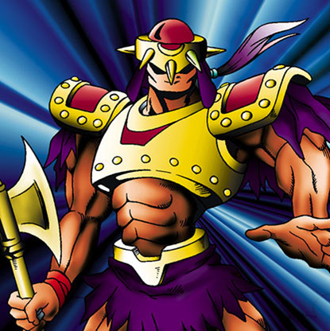

Axe Raider

STATS
ATK: 1700
DEF: 1150DECK COST
Deck Cost per Card: 29Fusion List (21 Possible Fusions)
- Axe Raider + Armaill = Flame Swordsman
- Axe Raider + Baby Dragon = Sword Arm of Dragon
- Axe Raider + Blackland Fire Dragon = Sword Arm of Dragon
- Axe Raider + Candle of Fate = Flame Swordsman
- Axe Raider + Crawling Dragon #2 = Sword Arm of Dragon
- Axe Raider + Crawling Dragon = Sword Arm of Dragon
- Axe Raider + Darkfire Dragon = Flame Swordsman
- Axe Raider + Dragon Piper = Flame Swordsman
- Axe Raider + Fire Eye = Flame Swordsman
- Axe Raider + Fire Reaper = Flame Swordsman
- Axe Raider + Firegrass = Flame Swordsman
- Axe Raider + Flame Ghost = Flame Swordsman
- Axe Raider + Flame Snake = Flame Swordsman
- Axe Raider + Koumori Dragon = Sword Arm of Dragon
- Axe Raider + Lesser Dragon = Sword Arm of Dragon
- Axe Raider + One-Eyed Shield Dragon = Sword Arm of Dragon
- Axe Raider + Petit Dragon = Sword Arm of Dragon
- Axe Raider + Spike Seadra = Sword Arm of Dragon
- Axe Raider + The Judgement Hand = Judge Man
- Axe Raider + Wicked Dragon with the Ersatz Head = Sword Arm of Dragon
- Axe Raider + Yamatano Dragon Scroll = Sword Arm of Dragon